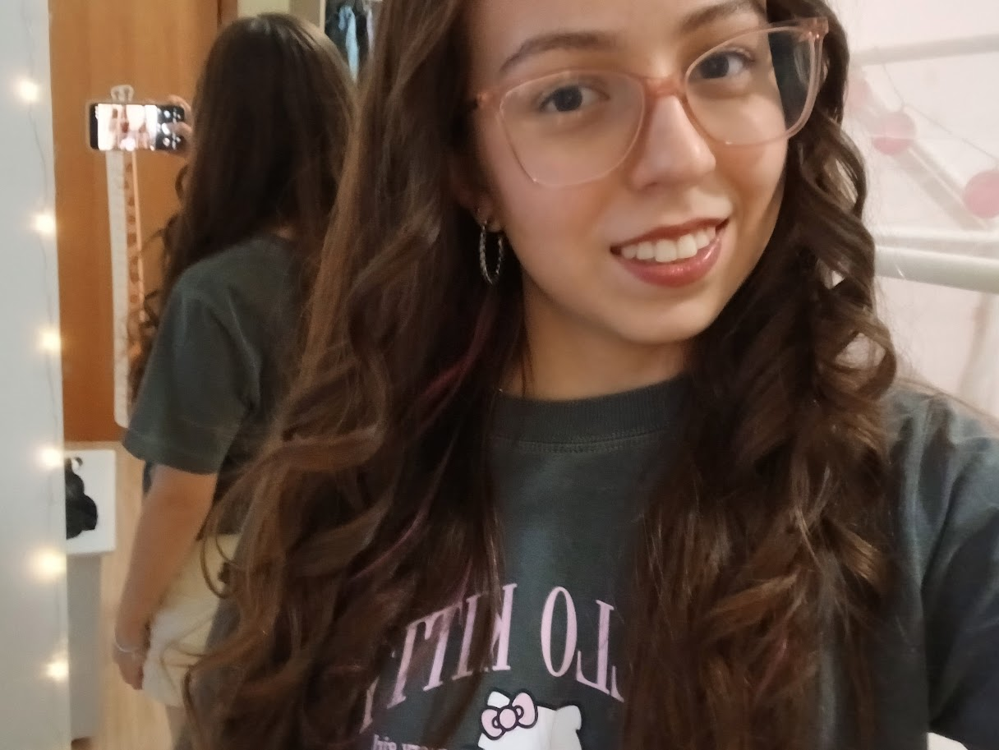

Atividades de HTML Semântico
Links para as atividades:
Saiba mais
Essas atividades têm como objetivo praticar o uso de HTML semântico e melhorar a organização das páginas web.
Data:
Meu nome é Isabela, tenho 15 anos e tenho grande interesse em música e tecnologia.
Estou interessada na área das exatas, especialmente engenharias. Uma carreira que me permita seguir na informática é a engenharia de software.

Links para as atividades:
Essas atividades têm como objetivo praticar o uso de HTML semântico e melhorar a organização das páginas web.
Aqui podem ficar outras atividades relacionadas à programação web.